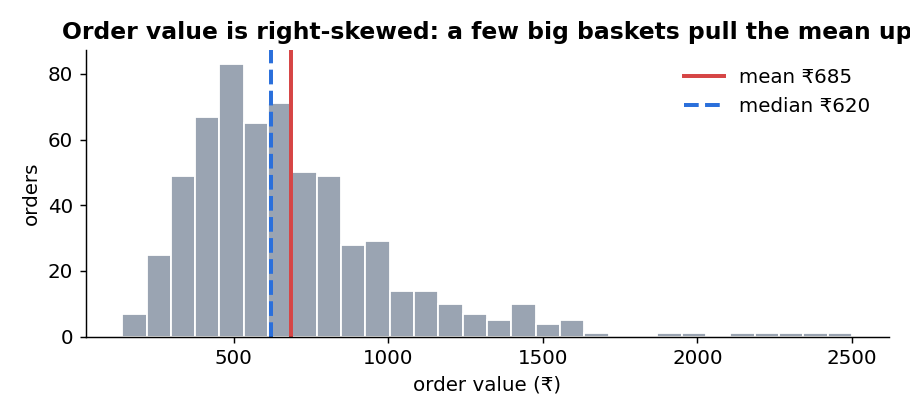
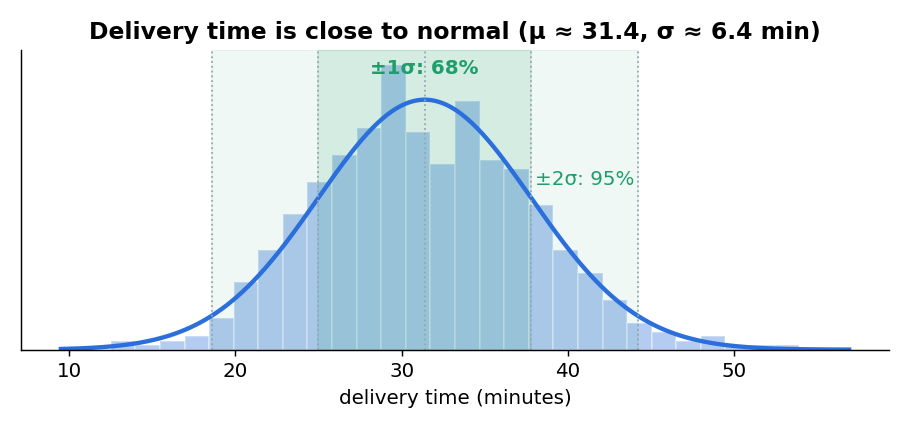
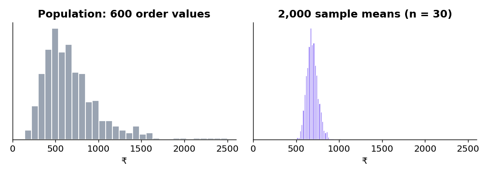
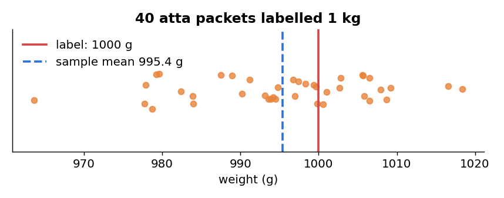
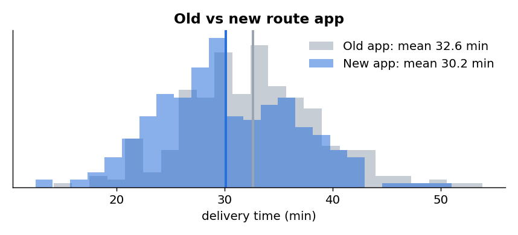
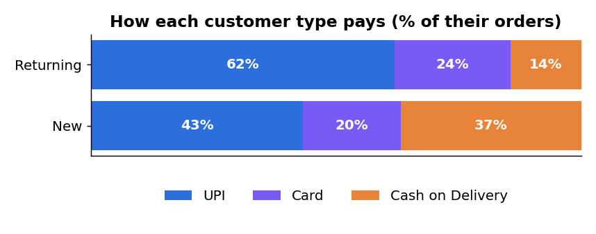
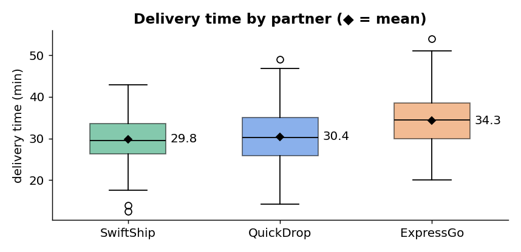

Introduction to statistics
Summarise the data you have: averages, spread, charts.
“The 600 trial orders took 31.4 minutes on average.”
Use a sample to conclude about the whole population, with a measured risk of being wrong.
“The machine under-fills all its packets, not just these 40.”
Population, sample, parameter, statistic
| Population | Sample | |
|---|---|---|
| Meaning | Every item you care about | The part you actually measure |
| KiranaMart example | Every atta packet the machine will ever fill | The 40 packets weighed on Monday |
| A number describing it is a… | parameter (usually unknown) | statistic (we compute it) |
| Symbols | N, μ (mean), σ (SD), p (proportion) | n, x̄ (mean), s (SD), p̂ (proportion) |
Types of data (NOIR)
| Level | What it means | In the trial dataset | Meaningful statistics |
|---|---|---|---|
| Nominal | Labels with no order | city, partner, payment_mode | Counts, %, mode |
| Ordinal | Ordered, gaps not equal | rating (1★–5★) | + median, percentiles |
| Interval | Equal gaps, no true zero | (temperature in °C) | + mean, SD |
| Ratio | Equal gaps and a true zero | delivery_min, order_value, items | + “twice as much” |
Descriptive statistics
Two questions describe any numeric column: where is the centre? and how spread out is it?
Measures of centre
| Measure | How | Strength | Weakness |
|---|---|---|---|
| Mean x̄ | Σx / n | Uses every value | Pulled by outliers and skew |
| Median | Middle value after sorting (average of the two middle ones if n is even) | Resistant to outliers | Ignores how extreme the extremes are |
| Mode | Most frequent value | Works for categories | There may be none, or several |
Measures of spread
Population variance σ² = Σ(x − μ)² / N Sample variance s² = Σ(x − x̄)² / (n − 1)
Standard deviation = √variance (same units as the data)
IQR = Q3 − Q1 (spread of the middle 50%)
Deviations −3, −1, −1, −1, 0, 0, 2, 4 → squares 9, 1, 1, 1, 0, 0, 4, 16 → sum 32.
Population: σ² = 32 / 8 = 4, σ = 2. Sample: s² = 32 / 7 = 4.57, s = 2.14.
Why n − 1? A sample is usually a little less spread out than its population, so dividing by a smaller number corrects the estimate upward (Bessel’s correction).
Try adding one huge value such as 250. Which measure jumps, and which hardly moves?
On the real data
import pandas as pd
df = pd.read_csv("kiranamart_delivery_trial.csv")
v = df["order_value"]
print("mean:", round(v.mean(), 2), " median:", v.median(), " mode of items:", df["items"].mode()[0])
print("range:", v.max() - v.min(), " variance:", round(v.var(), 1), " std:", round(v.std(), 2))
print("skewness:", round(v.skew(), 2))
print(df[["order_value", "delivery_min", "items"]].describe().round(2))
mean: 685.33 median: 620.0 mode of items: 3
range: 3750.0 variance: 124245.3 std: 352.48
skewness: 2.47
order_value delivery_min items
count 600.00 600.00 600.00
mean 685.33 31.38 3.36
std 352.48 6.41 1.57
min 140.00 12.50 1.00
25% 460.00 26.98 2.00
50% 620.00 30.90 3.00
75% 830.00 35.80 4.00
max 3890.00 53.90 9.00
pd.Series.std() divides by n − 1 (sample). np.std() divides by n (population) unless you write np.std(x, ddof=1). On delivery time: 6.402 (NumPy default) vs 6.408 (pandas). Tiny here, big for small samples.Data distribution and the normal distribution
A distribution shows how often each value occurs. Draw it as a histogram and look at its shape.


| Shape | Tail | Mean vs median | Example |
|---|---|---|---|
| Symmetric | both sides equal | mean ≈ median | delivery time (31.4 vs 30.9 min) |
| Right / positive skew | long tail to the right | mean > median | order value, incomes, house prices |
| Left / negative skew | long tail to the left | mean < median | marks in a very easy exam |
The normal distribution
The bell-shaped normal (Gaussian) distribution is described completely by two numbers, its mean μ and standard deviation σ. It is symmetric, mean = median = mode, and the total area under it is 1 (100%). Many measurements are roughly normal, and, thanks to the Central Limit Theorem (Section 4), sample means are almost always normal.
| Empirical rule | Theory | Delivery time (μ = 31.4, σ = 6.4) | Real data |
|---|---|---|---|
| within μ ± 1σ | 68% | 25.0 to 37.8 min | 68.3% |
| within μ ± 2σ | 95% | 18.6 to 44.2 min | 96.2% |
| within μ ± 3σ | 99.7% | 12.2 to 50.6 min | 99.7% |
z-scores
A 45-minute delivery: z = (45 − 31.4) / 6.4 = 2.13. The area to the right of z = 2.13 is about 0.017, so the normal model predicts 1.7% of deliveries take longer than 45 minutes. In the real data it was 12 of 600 = 2.0%. Close enough to trust the model.
Probability and sampling
Basic probability
| Idea | Rule | Trial example |
|---|---|---|
| Probability | P(A) = favourable / total, between 0 and 1 | Late (> 40 min): 52 / 600 = 0.087 |
| Complement | P(not A) = 1 − P(A) | On time: 1 − 0.087 = 0.913 |
| Addition | P(A or B) = P(A) + P(B) − P(A and B) | Subtract the overlap so it is not counted twice |
| Independence | P(A and B) = P(A) × P(B) | Two packets, each 20% under-weight: 0.2 × 0.2 = 0.04 |
| Conditional | P(A | B) = P(A and B) / P(B) | P(late | ExpressGo) = 30 / 184 = 0.163 |
late = df["delivery_min"] > 40
print("P(late) =", late.sum(), "/", len(df), "=", round(late.mean(), 3))
print((df.assign(late=late).groupby("partner")["late"].mean() * 100).round(1))
P(late) = 52 / 600 = 0.087 partner ExpressGo 16.3 QuickDrop 7.6 SwiftShip 3.5
Population vs sample, and how to sample
| Method | How it works | Example |
|---|---|---|
| Simple random | Every member has the same chance | Draw 40 packet numbers by lottery |
| Stratified | Split into groups (strata), sample randomly inside each | 50 New + 50 Returning customers |
| Systematic | Every k-th member after a random start | Every 25th packet off the line |
| Cluster | Randomly choose whole groups, measure everyone in them | 3 random stores, every order there |
| Convenience ⚠️ | Whoever is easiest to reach (biased) | Only customers who answer on WhatsApp |
Sampling error is the natural gap between a sample statistic and the population parameter. It is not a mistake; it is luck, and it gets smaller as the sample grows. Sampling bias is a real mistake: the sample systematically misses part of the population, and a bigger sample does not fix it.
The Central Limit Theorem (CLT)

Order value σ = ₹352, n = 30 → SE = 352 / √30 = ₹64.3. In 2,000 simulated samples the sample means had an SD of ₹61–64. This is the bridge to hypothesis testing: because sample means are normal, we can say how surprising a sample mean is.
Try n = 2, then n = 30, then n = 100. What happens to the shape and to the spread?
Hypothesis testing
| Term | Meaning | Route-app example |
|---|---|---|
| Null hypothesis H₀ | No effect, no difference (contains “=”) | μold = μnew |
| Alternative H₁ | The effect you are looking for | μold ≠ μnew (two-tailed) or μold > μnew (one-tailed) |
| Significance level α | The false-alarm risk you accept, fixed before looking | 0.05 (5%) |
| Test statistic | How far the data is from H₀, in standard-error units | t = 4.84 |
| p-value | If H₀ were true, the probability of a result at least this extreme | 0.0000016 |
| Decision | p < α → reject H₀; p ≥ α → fail to reject H₀ | Reject: the app really is faster |
The five steps
- State H₀ and H₁ in symbols and in words.
- Choose α (usually 0.05; 0.01 when a false alarm is expensive).
- Choose the test (Section 6) and compute the test statistic.
- Find the p-value (SciPy does this).
- Decide and explain in business language, with the size of the effect.
Two ways to be wrong
| H₀ is really true (machine fine) | H₀ is really false (machine under-fills) | |
|---|---|---|
| Reject H₀ | Type I error: false alarm. Probability = α | Correct. Probability = power = 1 − β |
| Fail to reject H₀ | Correct | Type II error: a miss. Probability = β |
- ❌ “p = 0.03 means a 3% chance H₀ is true.” ✅ It means: if H₀ were true, data this extreme would appear 3% of the time.
- ❌ “p = 0.40, so the groups are equal.” ✅ There is simply not enough evidence of a difference.
- ❌ Changing α after seeing p. ✅ α is fixed before the test.
Reject or not? (α = 0.05)
Statistical tests for data science
| Your question | Data | Test |
|---|---|---|
| Is one mean equal to a target, σ known? | numeric, 1 group | Z-test |
| Is one mean equal to a target, σ unknown? | numeric, 1 group | One-sample T-test |
| Do two groups have the same mean? | numeric, 2 independent groups | Independent (two-sample) T-test |
| Did the same subjects change? | numeric, before / after | Paired T-test |
| Do three or more groups have the same mean? | numeric, 3+ groups | One-way ANOVA |
| Are two categorical variables related? | counts in a table | Chi-square test of independence |
⚖️ Z-test: is the atta machine under-filling?
When: testing a mean when the population SD σ is known (or n is large). The packing-machine maker certifies σ = 12 g.
H₀: μ = 1000 g, H₁: μ ≠ 1000 g, α = 0.05.
n = 40, x̄ = 995.38 g.
SE = 12 / √40 = 1.897
z = (995.38 − 1000) / 1.897 = −2.43
Critical values ±1.96 → |z| > 1.96. p = 0.015.
Reject H₀: the machine under-fills by about 4.6 g per packet.

📱 T-test: does the new route app save time?
When: testing means when σ is unknown, so it is estimated by the sample SD s. The t distribution has heavier tails than the normal to allow for that extra uncertainty; with large samples it becomes almost identical to z.
| Type | Question | SciPy |
|---|---|---|
| One-sample | Is mean delivery time 30 min? (t = 5.27, p < 0.001: no, it is longer) | ttest_1samp(x, 30) |
| Independent | Old app vs new app (different orders) | ttest_ind(a, b, equal_var=False) |
| Paired | The same riders before and after training | ttest_rel(before, after) |
Old app: n = 296, x̄ = 32.64, s = 6.26
New app: n = 304, x̄ = 30.15, s = 6.32
SE = √(6.26²/296 + 6.32²/304) = 0.514
t = (32.64 − 30.15) / 0.514 = 4.84, p = 0.0000016
Reject H₀: the app saves about 2.5 minutes per order.
Control check: order value by app gives t = −0.49, p = 0.63 → fail to reject. The app changes speed, not what people buy. Good.

💳 Chi-square test: do new customers pay differently?
When: both variables are categorical. Compare the observed counts with the counts you would expect if the variables were independent.
χ² = Σ (O − E)² / E df = (rows − 1)(columns − 1)
| Observed (expected) | UPI | Card | Cash on Delivery | Total |
|---|---|---|---|---|
| New | 113 (140.5) | 52 (57.4) | 96 (63.1) | 261 |
| Returning | 210 (182.5) | 80 (74.6) | 49 (81.9) | 339 |
| Total | 323 | 132 | 145 | 600 |
Biggest cell: (96 − 63.1)² / 63.1 = 17.2. All six cells add up to χ² = 40.85, df = 2. The critical value at α = 0.05 is 5.99, and p ≈ 1.3 × 10⁻⁹.
Reject H₀: payment mode depends on customer type. New customers use Cash on Delivery 37% of the time vs 14% for returning ones, so removing COD would hurt first orders most.

Rule of thumb: every expected count should be at least 5. For a 2 × 2 table SciPy applies Yates’ continuity correction by default.
🛵 One-way ANOVA: are the three partners equally fast?
When: one numeric variable, three or more groups. Why not three T-tests? Each test has a 5% false-alarm risk; three tests push the overall risk to about 1 − 0.95³ ≈ 14%. ANOVA does one test.
SwiftShip 29.84 (n = 231) · QuickDrop 30.44 (n = 185) · ExpressGo 34.25 (n = 184)
SSB = 2,230.5, df = 2 → MSB = 1,115.3
SSW = 22,363.8, df = 597 → MSW = 37.46
F = 1,115.3 / 37.46 = 29.77, p ≈ 4.7 × 10⁻¹³
Reject H₀: at least one partner’s mean differs.
ANOVA does not say which one. The means point to ExpressGo; a post-hoc test such as Tukey’s HSD confirms which pairs differ. Control: by city, F = 1.24, p = 0.29 → no evidence that city matters.

Which test would you use?
Python implementation: NumPy, pandas and SciPy
Each library has a job: pandas loads and groups the data, NumPy does the fast arithmetic, SciPy (scipy.stats) does the distributions and tests. This is the core of the lab file, with its real output.
import numpy as np
import pandas as pd
from scipy import stats
df = pd.read_csv("kiranamart_delivery_trial.csv")
packs = pd.read_csv("atta_pack_weights.csv")
# Z-test (sigma known = 12 g)
w = packs["weight_g"]
z = (w.mean() - 1000) / (12 / np.sqrt(len(w)))
print("Z-test:", round(z, 3), round(2 * stats.norm.sf(abs(z)), 4))
# Independent T-test (Welch)
old = df.loc[df["route_app"] == "Old", "delivery_min"]
new = df.loc[df["route_app"] == "New", "delivery_min"]
t, p = stats.ttest_ind(old, new, equal_var=False)
print("T-test:", round(t, 3), p)
# Chi-square test of independence
table = pd.crosstab(df["customer_type"], df["payment_mode"])
chi2, p, dof, expected = stats.chi2_contingency(table)
print("Chi-square:", round(chi2, 2), dof, p)
# One-way ANOVA
groups = [g["delivery_min"] for _, g in df.groupby("partner")]
F, p = stats.f_oneway(*groups)
print("ANOVA:", round(F, 2), p)
Z-test: -2.435 0.0149 T-test: 4.844 1.6192855734904318e-06 Chi-square: 40.85 2 1.3445949072110282e-09 ANOVA: 29.77 4.732185153964879e-13
stats.norm.cdf(z) area left of z · stats.norm.sf(z) area right of z · stats.norm.ppf(0.975) → 1.96 · stats.ttest_1samp, ttest_ind, ttest_rel · stats.chi2_contingency · stats.f_oneway. The lab file wraps the decision in a small function decide(p).Interpreting statistical test results
A test result is only useful when a manager can act on it. A good conclusion has five parts:
Example: “A Welch T-test showed that deliveries with the new route app were faster than with the old app (t = 4.84, p < 0.001). The average saving was 2.5 minutes per order. We recommend rolling out the new app to all riders.”
| Business question | Result | Decision | Plain-English conclusion |
|---|---|---|---|
| Machine under-filling? | z = −2.43, p = 0.015 | Reject H₀ | Packets average 995 g. Recalibrate the machine. |
| New app faster? | t = 4.84, p < 0.001 | Reject H₀ | Saves 2.5 min per order. Roll it out. |
| App changes order value? | t = −0.49, p = 0.63 | Fail to reject | No evidence it changes what people buy. |
| Payment depends on customer type? | χ² = 40.85, p < 0.001 | Reject H₀ | New customers rely on COD (37% vs 14%). Keep it for first orders. |
| Partners equally fast? | F = 29.77, p < 0.001 | Reject H₀ | ExpressGo is about 4 min slower. Review its contract. |
| City affects delivery time? | F = 1.24, p = 0.29 | Fail to reject | No evidence; the delay is about the partner, not the city. |
Hands-on lab: the Hypothesis Test Lab
Part A runs every test from this unit on the real trial data, in this page. Part B is the same work in Python.
Part A · Hypothesis Test Lab (in the browser)
Your tasks
Check your answers
1. H₀: μ = 1000 g, H₁: μ ≠ 1000 g. z = −2.43, p = 0.015 → reject at 0.05. At α = 0.01, p = 0.015 > 0.01 → fail to reject. The same data gives a different decision, which is why α must be fixed before testing. 2. Delivery: t = 4.84, p < 0.001, the new app is about 2.5 min faster. Order value: t = −0.49, p = 0.63, no evidence of a difference. 3. A T-test compares exactly two groups; partner has three, so use ANOVA. 4. Partner: F = 29.77, p < 0.001 (real effect). City: F = 1.24, p = 0.29 (no evidence). The partner matters, not the city. 5. χ² = 40.85, p < 0.001 (related); city × payment χ² = 4.61, p = 0.59 (no evidence). The New + Cash on Delivery cell: 96 observed vs 63.1 expected. 6. Ratings: Old 3.71, New 3.83, t = −1.63, p = 0.10 → fail to reject at 0.05. The 0.11-star gap could be chance; the honest conclusion is “no evidence yet”, and a longer trial would be needed. Notice that a real 2.5-minute saving did not (yet) show up as a significant rating change.
Part B · The same lab in Python
1. Trial data
kiranamart_delivery_trial.csv
2. Packets
atta_pack_weights.csv
3. Notebook
Open in Jupyter or VS Code
or: script
python unit2_lab.py
- Put both CSV files and the notebook in the same folder.
- Install the libraries once:
pip install numpy pandas scipy matplotlib - Run the cells from top to bottom. There are nine steps, one per business question.
- The last cell saves
unit2_stats_report.pngand prints four recommendations for the manager.
stats.ttest_1samp to test whether the mean delivery time is 30 minutes, then add a post-hoc comparison of the three partners with three Welch T-tests and a Bonferroni correction (α = 0.05 / 3). Which pairs really differ?Summary and revision
| Topic | Remember this |
|---|---|
| Introduction | Descriptive = summarise; inferential = sample → population. Parameter (μ, σ) vs statistic (x̄, s). NOIR data types |
| Centre | Mean (outlier-sensitive), median (robust, use for skew), mode (categories) |
| Spread | Variance = mean squared deviation; SD = √variance; sample uses n − 1 (pandas default), NumPy uses n unless ddof=1 |
| Distribution | Right skew: mean > median. Normal: symmetric, 68–95–99.7, z = (x − μ)/σ |
| Probability | Complement, addition, independence (multiply), conditional P(A|B) |
| Sampling | Random, stratified, systematic, cluster; avoid convenience. CLT: sample means are normal, SE = σ/√n |
| Hypothesis testing | H₀ = no effect; α before the test; reject if p < α; Type I = false alarm (α), Type II = miss (β) |
| Tests | Z (σ known) · T (σ unknown: one-sample, independent, paired) · χ² (two categorical) · ANOVA (3+ group means) |
| Interpretation | Statistic + p + effect size + business action. Significant ≠ important. Fail to reject ≠ proved equal |